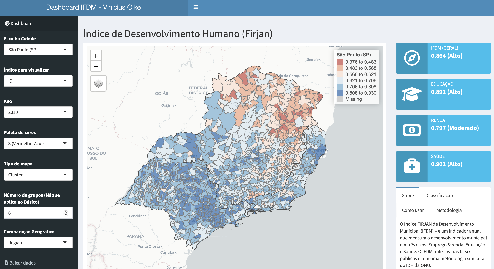

Dashboard IDH-Firjan
Introdução
Este ano decidi aprender Shiny para construir aplicativos de dados. Shiny é um pacote que facilita a criação de aplicativos e que permite combinar linguagens (como HTML, CSS, R). Como primeiro projeto, optei por fazer um dashboard simples, que mostrasse os dados de desenvolvimento humano dos municípios brasileiros.
A curva de aprendizado do Shiny é dura no início; o lado bom é acaba-se forçando a aprender o básico de HTML e CSS no processo de montar o aplicativo. Como o código, em R, se relaciona com o aplicativo também muda: tudo tem que ser planejado em termos de front-end e back-end. Organizei a estrutura do aplicativo quase como se fosse um pacote de R e também usei o renv para garantir que tudo continue funcionando bem.
Não conheço material de referência em português, mas posso recomendar o livro Mastering Shiny de Hadley Wickham.
Links:
Sobre o app
O app foi feito em Shiny, usando o pacote shinydashboardplus, e todos os códigos estão no repositório do Github.
Este aplicativo permite visualizar os dados do Índice Firjan de Desenvolvimento Municipal (IFDM) num dashboard. O IFDM tem metodologia similar ao popular Índice de Desenvolvimento Humano (IDH) da ONU; contudo, o IFDM abrange um número maior de variáveis. Além disso, o IFDM é calculado anualmente enqunto o IDH é calculado apenas uma vez a cada dez anos.

A interpretação do IFDM é bastante simples: quanto maior, melhor. O mapa interativo permite escolher uma cidade e compará-la com a realidade do seu estado. Também é possível fazer uma comparação regional ou nacional, alterando o campo ‘Comparação Geográfica’, mas note que isto pode levar algum tempo para carregar. A lista de cidades está ordenada pelo tamanho da população, então as principais cidades tem maior destaque.
O usuário pode escolher o tipo de mapa, paleta de cores e o número de grupos para produzir diferentes tipos de visualização. O dashboard contém um pequeno box com explicações sobre a metodologia do IFDM, a classificação dos dados, e sobre como utilizar o app.
Os quatro gráficos que aparecem abaixo do mapa ajudam a contextualizar a cidade.
Na primeira linha há dois gráficos estáticos: um painel de histogramas e uma espécie de gráfico de linha. Em ambos os casos, o objetivo é ajudar a contextualizar o município em relação à base de comparação. No caso acima, vê-se como São Paulo está entre os maiores IDHs do estado, mas que tem um escore relativamente ruim no critério de educação.
A segunda linha mostra gráficos interativos, feitos com {plotly}. O gráfico da esquerda compara os números do município contra os valores médios do Brasil. Já o gráfico da esquerda mostra a evolução temporal de todas as variáveis do IFDM. Nesta comparação fica evidente o impacto da Crise de 2014-16.
Alguns exemplos de uso
Um caso interessante que surgiu nos dados foi Porto Alegre. Em geral, a capital do estado, e a sua região metropolitana concentram cidades com os maiores níveis de desenvolvimento humano do seu respectivo estado. Isto não vale para a Região Metropolitana de Porto Alegre; as cidades com os melhores indicadores de desenvolvimento humano no RS estão concentrados na “Serra Gaúcha”, no entorno de Caxias do Sul e Bento Gonçalves.
Outro caso interessante é de Belo Horizonte e do estado de Minas Gerais como um todo. Em Minas Gerais há cidades com alto padrão de desenvolvimento como Uberlândia e Uberaba e cidade com baixíssimo desenvolvimento como Minas Novas e Santa Helena de Minas.